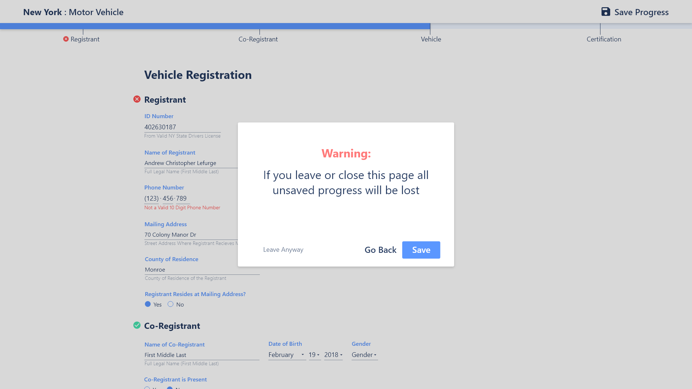

Form Configuration
By first learning who the user is, the form can be configured to only ask the user for the information that is necessary to complete their task.
Form
The core form was redesigned to present information in a clear relationship based hierarchy. Subtle features were added to enhance the user experience and reduce error, such as helper text, error icons, and an annotated progress bar.

Warning State
To key features were introduced to mitigate accidental progress loss. The first is a button in the top right that allows the user to save their progress. The second is a warning screen that is presented when the user attempts to close or leave the page.
User Certification
Signing a form is an unintuitive action on a desktop site and therefore an alternative method of user certification was required. The user has the option to either enter their social security number, if they are uncomfortable doing so or are not a US citizen they may alternatively upload a photo of a valid drivers license.